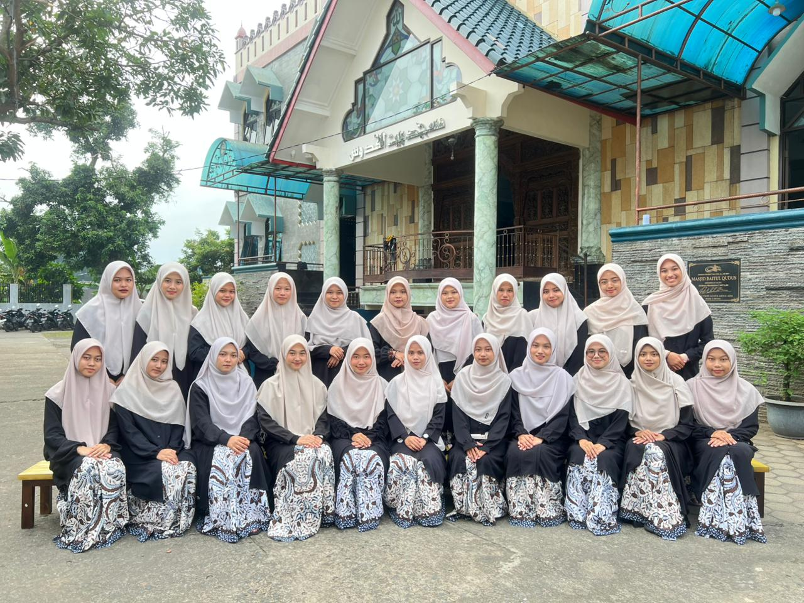
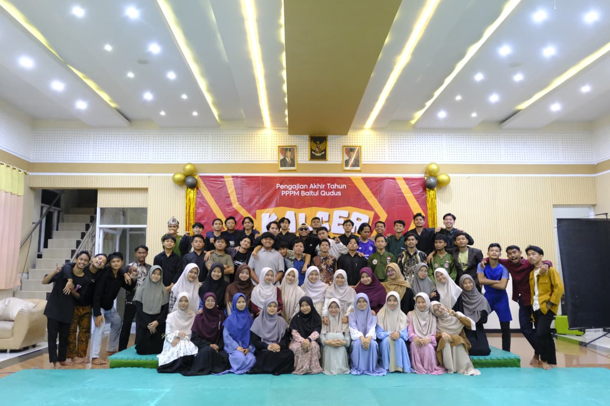

Kelas Kutubussittah
Kelas Kutubussittah merupakan forum pembelajaran tentang enam kitab induk hadis yang menjadi rujukan paling penting bagi umat islam setelah Al-Qur'an dan Al-Hadis. Ke enam kitab tersebut adalah Shahih Bukhari, Shahih Muslim, Sunan Abu Dawud, Sunan At-Tirmidzi, Sunan An-Nasa'i, dan Sunan Ibnu Majah.

